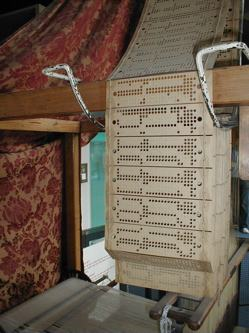
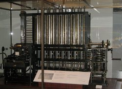
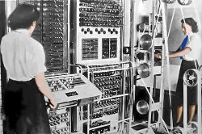

Born two centuries ago, Ada Lovelace was a pioneer of computing science. She took part in writing the first published program and was a computing visionary, recognizing for the first time that computers could do much more than just calculations.
Ada Lovelace was born in London, England on December 10, 1815. She was named Augusta Ada Byron, but her surname changed after she married.Her father was the brilliant, yet notorious poet Lord Byron (mad, bad and dangerous to know!) and her mother was Anne Isabella Milbanke. Her father was one of the greats of poetry, but his personality was unstable. Her mother was highly intelligent, had been well-educated by private tutors, and was particularly enthusiastic about mathematics and the sciences.Ada's father abandoned his wife and daughter, leaving Britain forever when Ada was one month old. He died in Greece when Ada was eight years old. Ada never knew him.
Ada's mother, Lady Byron, seems to have had little or no affection for her daughter and had very little contact with her. The young girl was brought up by her maternal grandmother and servants. Her grandmother died when Ada was just seven years old, and Ada herself suffered long spells of poor health in both childhood and later.
One thing her mother insisted upon was that Ada get a high quality education.
In those days, there were no places for girls in the United Kingdom's universities.
However, girls from wealthy, aristocratic families could still be educated to a high level by private tutors. And this is how Ada was educated.
Her mother wanted Ada to concentrate particularly hard on mathematics and science. She had two reasons for this:
these were her own favorite subjects
she was worried that insanity ran in Ada's father's damily and wanted her daughter to stay away from her father's interests, such as poetry
Lady Byron also ensured Ada had tuition in music and French, since musical ability and the ability to read and make conversation in French were socially desirable.Her mother was very strict with Ada. In fact she seems to have been something of a tyrant, demanding that the young girl work very hard and punishing her with periods of isolation if she thought she had not worked hard enough. Lady Byron's desire was that her daughter would become a highly disciplined, serious person the opposite of her father.
Ada Lovelace: Mathmatician and Computer Scientist
It may seem odd to call someone born in 1815 a computer scientist, but that is what Ada Lovelace became.Her life changed forever on June 5, 1833, when the 17 year-old girl met Charles Babbage. This was not something many girls Ada's age could ever do, but as an aristocrat she enjoyed better opportunities than most.Babbage was Lucasian Professor of Mathematics at the University of Cambridge, a position once held by Isaac Newton and held more recently by Stephen Hawking.
Babbage learned that both Lady Byron and her daughter were knowledgeable about mathematics and invited them to see a small-scale version of the calculating machine he was working on called the difference engine.
Babbage had become fed up with people making mistakes in lengthy calculations, and his idea was to build an infallible steam-driven or hand-cranked calculating machine. Ada was completely captivated by the concept, but there was little she could do at the time to help Babbage with his work.
However, she sent a message to Babbage requesting copies of the machine's blueprints, because she was determined to understand how it worked.
Learning That You Can Talk to Machines

A Jacquard loom and punch cards. A first step in machine language.Source
Ada and Lady Byron also arranged to visit factories where they could see steam driven machines at work and learn as much as they could about mechanical devices. These were highly unusual activities for an aristocratic woman and her daughter!
An important part of Ada's education was to see the Jacquard loom in operation.
The Jacquard loom was a machine that produced textiles with patterns woven into them. Joseph Marie Jacquard had invented it in 1801. The Jacquard loom was controlled by punch cards, with one card equal to one row of the textile being woven. If the card was punched, the loom thread would be raised. If the card was not punched, the loom thread would be left alone. In other words, the punch cards issued instructions to the machine They were a simple language, or putting it another way, machine code.
More Math and also Marriage and Children
Ada continued her independent pursuit of mathematical knowledge. She became friends with one of the finest female mathematicians of her time, Mary Somerville, who discussed modern mathematics with Ada, set her higher level mathematics problems, and talked in detail about Charles Babbage's difference engine.
In 1835, at the age of 19, Ada married William King, the Earl of Lovelace, with whom she would have three children between 1836 and 1839.
In 1841 she began working on mathematics again, and was given advanced work by Professor Augustus De Morgan of University College London. She also continued to learn advanced mathematics through correspondence with Mary Somerville. All the time, she had kept Babbage's difference engine in mind.
Ada Lovelace's Notes on the Analytical Engine
In 1842 Ada Lovelace became aware of a work in French called Sketch of Charles Babbage's Analytical Engine, by Luigi Federico Menabrea, an engineer.Menabrea had listened to lectures by Babbage and written them up in French. By this time, Babbage had moved on from the difference engine to a much higher level computer concept, the analytical engine.The analytical engine would be capable of much more sophisticated calculations than the original difference engine.
Indeed, the analytical engine concept was completely groundbreaking, and a work of incredible genius on Babbage's part; it was the world's first programmable computer. In modern terms, the analytical engine would be described as Turing-complete. It featured an arithmetic logic portion, control flow by loops and conditional branching, and separate memory – and all of this to be built using mechanical parts and powered by hand-cranking or steam!
Ada Lovelace got hold of Menabrea's work and translated it into English.
Babbage read her translation and asked her why she had not written such a paper herself, because she was more than capable. Perhaps she could now add her own thoughts to Menabrea's work?
Ada Lovelace responded by adding notes to her translation of Menabrea's work. Her notes were three times more extensive than the original work. When her English translation was published, most of the work published was actually her own.
She also added algebraic workings to the notes for how an analytical engine could perform calculations. Babbage himself took on one of the trickiest calculations – Bernoulli Numbers – and sent it to Ada to include in her work, but she detected and corrected what Babbage himself described as 'a grave error' in his working. In her notes, she included the world's first published computer program, or algorithm – this was the Bernoulli number algorithm – and hence she is often cited as the world's first computer programmer. It would be fair to say, though, that Babbage contributed much of this section of her notes – precisely how much is the subject of academic debate.
In her notes Ada Lovelace broke new ground in computing, when she realized something that nobody else had. She realized that an analytical engine could go beyond numbers. This was the first ever conception of a modern computer – not just a calculator – but a machine that could contribute to other areas of human endeavor, for example to compose music.
Ada Lovelace had grasped that anything that could be converted into numbers, such as music, or the alphabet (language) or images, could then be manipulated by computer algorithms. An analytical engine had the potential to revolutionize the way the whole world worked, not just the world of mathematics.
Ada's notes indicate that her mental processes had evolved further than her mother's strictly disciplined approach. She had become comfortable with a more visionary approach. Yes, it's true that her notes are full of mathematics, but she had freed her mind sufficiently to look beyond the equations and algorithms to other possibilities. Babbage himself described her as ‘an enchantress of numbers.
However, this was not destined to be the brilliant dawn of a new science.
Ada Lovelace became increasingly unwell after she wrote her notes and died young. Charles Babbage ran into financial problems, which meant that he never built a working computer.An important question to ask at this stage is: could one of Babbage's mechanical computers ever have worked in practice?

The working difference engine at the Science Museum in London. Source
In 1991, Doron Swade, Curator of Computing at London's Science Museum, had a difference engine built using Babbage's design.
It weighed 5 tons and worked perfectly. One or two small design errors had to be corrected, although it is likely that these were deliberate errors aimed at preventing a competitor or foreign government building an engine easily if they could steal the plans.
Enter Alan Turing
About 90 years after Ada Lovelace wrote her notes, Alan Turing entered the field. Turing, of course, was a genius in his own right.
As a young man he had read Ada Lovelace's notes, among many other papers he read. We know he disagreed with one of her conclusions - that artificial intelligence is not possible. She believed that computers could only ever follow instructions, and could never 'think'; independently. Turing demonstrated that she was wrong.
Unfortunately, with no means of asking him the question, we cannot say to what extent Ada Lovelace's work actually influenced his concept of The Universal Turing Machine, the machine concept that began the modern age of computing.
Certainly the mathematics involved in the development of the Universal Turing Machine is beyond anything done in Babbage and Lovelace's time. On the other hand, the concept of a machine that could be more than a calculator, to compose music, for example, began with Lovelace's notes.

A Colossus computer at Bletchley Park being used to decode German messages sent during World War 2. Source
The codebreakers at Bletchley Park in the United Kingdom, where Turing worked during World War 2, built and used the Colossus series of computers – the world's first electronic computers. In doing so, they actually put Lovelace's visionary concept of a computer to work."
Coded text from German messages was converted to numbers which could then undergo statistical analysis by the computer before being converted back into text that could be read and understood by humans.
The Mother of Modern Computing?
So, is it correct to describe Ada Lovelace as the mother of our modern concept of computing? If we're using language like mothers and fathers,I think we're on pretty safe ground to say that Ada Lovelace is the mother of modern computing, and Charles Babbage is the father.
What we can't say for certain is:
Did Ada and Charles's child die in infancy, so that Turing's computing breakthroughs represented an entirely new child?
Did Ada and Charles's child live on in some kind of suspended animation until it was rediscovered, adopted and reared into adulthood by Alan Turing. We shall probably never know the answer.
What we do know is that the Pentagon and US military's programmers named their own computing language Ada.
The End
Ada Lovelace died, probably of uterine cancer, at the age of 36 on November 27, 1852. Her health had deteriorated after she completed her notes on the analytical engine, and she had suffered a variety of illnesses. She had been in pain for several years, and was given opiates by her physicians to help her cope with it. She also drank considerable amounts of alcohol, affecting her moods in her later years.
In the end, she forgave her father for abandoning her as a baby. She came to believe that her mother had deliberately tried to turn her against her father. Ada requested that she be buried beside Lord Byron at the Church of St. Mary Magdalene, Hucknall, Nottingham. Her grave can be seen there today.
We’ll end with the words penned by Lord Byron at the beginning of one of his greatest works Childe Harold’s Pilgrimage soon after he left his wife and baby daughter forever.